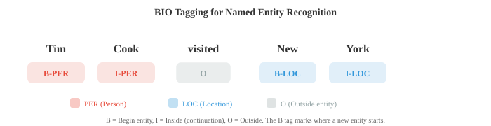
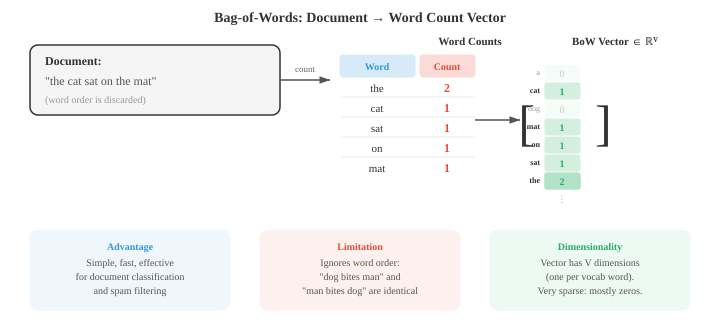

文本处理与经典 NLP¶
文本处理将原始字符转化为模型可以消费的结构化表示。本文涵盖 tokenisation（词级、子词、BPE、WordPiece）、文本规范化、编辑距离、TF-IDF、n-gram 语言模型、POS tagging、NER 和情感分析——这些经典 NLP 流水线至今仍是现代系统的基础。
-
原始文本是杂乱无章的。在任何 NLP 模型处理语言之前，文本必须经过清洗、规范化并转换为结构化表示。本文涵盖从原始字符到模型可用特征的完整流水线，以及深度学习之前主导 NLP 领域的经典算法。
-
文本规范化（Text normalisation） 将原始文本转化为规范形式。目标是减少无关变体，使"Hello"、"hello"、"HELLO"和"héllo"能得到适当处理。
-
大小写折叠（Case folding） 将文本转换为小写。这将"The"和"the"合并为同一 token。对大多数任务有帮助，但在某些情况下会丢失有用信息：如"US"（国名）与"us"（代词），或"Apple"（公司名）与"apple"（水果）。
-
Unicode 规范化 处理同一字符可能有多种编码方式的问题。字符"é"可以是单个码点（U+00E9），也可以是基字符"e"加组合重音符（U+0065 + U+0301）。NFC 规范化将它们合并为一个码点；NFD 则将其分解。不进行规范化，两个看起来相同的字符串可能无法匹配。
-
编辑距离（Edit distance） 衡量两个字符串的差异程度。Levenshtein 距离统计将一个字符串转换为另一个字符串所需的最少单字符插入、删除和替换操作数。"kitten"→"sitting"的编辑距离为 3（k→s、e→i、插入 g）。
-
编辑距离使用动态规划计算（在算法章节中回顾）。定义 \(D[i][j]\) 为字符串 \(s\) 的前 \(i\) 个字符与字符串 \(t\) 的前 \(j\) 个字符之间的距离：
-
编辑距离广泛用于拼写校正、模糊匹配和 DNA 序列比对。在 NLP 中，它用于处理错别字和寻找相似词。
-
Tokenisation 将文本拆分为模型可以处理的离散单元（token）。这是第一个也可以说是最重要的预处理步骤。Tokenisation 策略的选择对模型行为影响深远。
-
空白符 tokenisation 按空格拆分。简单但朴素："New York"变成两个 token，"don't"是一个 token（或根据分割器拆成"don"和"'t"），而中文和日文等语言词语之间根本没有空格。
-
基于规则的 tokenisation 使用手工设计的模式（正则表达式）处理缩略语、标点和特殊情况。"I'm"→"I"+"'m"，"U.S.A."保持为一个 token。每种语言都需要自己的规则，工作量较大。
-
子词 tokenisation（Subword tokenisation） 是现代解决方案。它不在词边界处分割，而是从数据中学习高频子词单元的 vocabulary。这能优雅地处理未知词：如果"unhappiness"不在 vocabulary 中，它可能被拆分为"un"+"happi"+"ness"，保留了形态学结构。

-
字节对编码（Byte-Pair Encoding，BPE） 以单个字符作为初始 vocabulary，反复寻找最高频的相邻对并将其合并为新 token。经过足够多次合并后，常见词成为单个 token，罕见词被拆分为高频子词片段。
-
BPE 算法：
- 用训练语料库中所有单个字符初始化 vocabulary
- 统计所有相邻 token 对的频率
- 将最高频的对合并为新 token
- 重复步骤 2-3，达到所需合并次数（vocabulary 大小）
-
例如，从"l o w"（5 次）、"l o w e r"（2 次）、"n e w e s t"（6 次）开始：最高频对可能是"e s"→合并为"es"。然后"es t"→"est"。然后"n e w"→"new"。最终 vocabulary 同时包含完整词和子词片段。
-
WordPiece（BERT 使用）与 BPE 类似，但根据似然值而非频率选择合并。它合并能最大化训练数据语言模型似然值的对。非词首的子词 token 以"##"为前缀（如"playing"→"play"+"##ing"）。
-
Unigram（SentencePiece 使用）采用相反的方法：从大型 vocabulary 开始，迭代删除删除后对训练数据似然值损失最小的 token。最终 vocabulary 是最能解释语料库的子词单元集合。
-
SentencePiece 是一个与语言无关的 tokenisation 库，将输入视为原始字节流（不在空格处进行预 tokenisation）。这使其适用于任何语言，包括没有空格的语言。它实现了 BPE 和 Unigram 两种算法。
-
Vocabulary 大小是关键超参数。典型选择范围为 30,000 到 100,000 个 token。较大的 vocabulary 意味着每个序列的 token 更少（效率更高），但 embedding 表更大。较小的 vocabulary 意味着更多子词拆分和更长的序列。
-
这两种技术都将词还原为基本形式，但方法不同。
-
词干提取（Stemming） 使用粗略规则截去后缀。Porter 词干提取器将"running"还原为"run"，"happiness"还原为"happi"，"studies"还原为"studi"。快速但不精确："university"和"universe"都被还原为"univers"，尽管它们毫无关系。
-
词形还原（Lemmatisation） 利用词典和形态学分析找到真正的字典形式（lemma）。"Running"→"run"，"better"→"good"，"mice"→"mouse"。它需要知道词性："saw"作为动词词形还原为"see"，但作为名词则保持"saw"。
-
现代子词 tokenisation 在神经 NLP 中很大程度上取代了词干提取和词形还原，但后者在信息检索及处理较小模型或有限数据时仍然有用。
-
词性（Part-of-speech，POS）tagging 为每个词分配语法类别：名词、动词、形容词、限定词等。这是最古老的 NLP 任务之一，是句法分析的基础。
-
Penn Treebank 标注集是英语最常用的，共有 36 个标签（NN 表示单数名词，NNS 表示复数名词，VB 表示基本形动词，VBD 表示过去时，JJ 表示形容词等）。
-
POS tagging 很棘手，因为许多词存在歧义。"Book"可以是名词（"the book"）或动词（"book a flight"）。"Run"在各词性中有数十种意义。语境至关重要。
-
早期 tagger 使用第 05 章的隐马尔可夫模型（Hidden Markov Models，HMMs）。隐藏状态是 POS 标签，观测值是词。转移概率捕捉标签序列（限定词后可能跟名词或形容词），发射概率捕捉哪些词与哪些标签共现。Viterbi 算法找出最可能的标签序列。
-
POS tagging 的 HMM 模型：
-
现代 POS tagger 使用神经网络（双向 LSTM 或 transformer），在英语上的准确率超过 97%，接近人类水平。
-
命名实体识别（Named Entity Recognition，NER） 识别并分类文本中的专有名词和其他特定实体：人名、机构名、地名、日期、货币金额等。
-
在"Apple CEO Tim Cook announced the event in Cupertino on Monday"中，NER 系统应识别：Apple（机构）、Tim Cook（人名）、Cupertino（地名）、Monday（日期）。
-
NER 通常被框架为使用 BIO tagging（也称 IOB tagging）的序列标注（sequence labelling） 任务。每个 token 获得一个标签：
- B-TYPE：TYPE 类型实体的开始
- I-TYPE：TYPE 类型实体的内部（延续部分）
- O：实体外部
-
"Tim Cook visited New York"变为：Tim/B-PER Cook/I-PER visited/O New/B-LOC York/I-LOC。B 标签标记新实体的起始位置，当两个同类型实体相邻时尤为重要。

- 经典 NER 使用第 05 章的条件随机场（Conditional Random Fields，CRFs），它对给定输入的整个标签序列的条件概率建模。与生成式的 HMM（建模 \(P(x, y)\)）不同，CRF 是判别式的，直接建模 \(P(y \mid x)\)。线性链 CRF 定义为：
-
其中 \(f_k\) 是发射特征（位置 \(i\) 处给定输入时标签 \(y_i\) 的可能性），\(g_j\) 是转移特征（给定前一标签 \(y_{i-1}\) 时标签 \(y_i\) 的可能性）。
-
配分函数 \(Z(x) = \sum_{y'} \exp(\ldots)\) 对所有可能的标签序列求和以归一化分布。训练最大化条件对数似然，这需要使用前向算法（第 05 章）高效计算 \(Z(x)\)。
-
相较于独立分类每个 token，CRF 的关键优势在于：其转移特征强制结构约束（例如，I-PER 应只跟在 B-PER 或 I-PER 之后，而不出现在 O 之后）。
-
现代 NER 在神经编码器（BiLSTM-CRF 或 BERT-CRF）之上叠加 CRF，神经网络生成发射得分，CRF 层学习转移结构。
-
句法 parsing 将句子转换为其句法结构，即成分树或依存树（均来自第 01 节）。
-
CYK 算法（Cocke-Younger-Kasami）使用动态规划对上下文无关文法进行句子 parsing。
-
它要求语法是乔姆斯基范式（Chomsky Normal Form）（每条规则右侧有两个非终结符或一个终结符）。它自底向上填充一张三角形表格：单元格表示句子的跨度，每个单元格存储能生成该跨度的非终结符。
-
CYK 的时间复杂度为 \(O(n^3 \cdot |G|)\)，其中 \(n\) 是句子长度，\(|G|\) 是语法大小。这是精确算法，但对大型语法较慢。
-
移进-归约 parsing（Shift-reduce parsing） 从左到右处理句子，维护一个栈。每一步要么移进（shift）（将下一个词压入栈），要么归约（reduce）（从栈中弹出元素并替换为短语）。训练好的分类器决定每一步的动作。时间复杂度为 \(O(n)\)，比 CYK 快得多。
-
Dependency parsing 在实践中比成分 parsing 更常用。基于转移的 dependency parser（如移进-归约）和基于图的 parser（对所有可能的边评分并找到最大生成树）是两种主要方法。使用 BiLSTM 或 transformer 的神经 dependency parser 达到了最先进的效果。
-
在 embedding 出现之前，NLP 使用简单计数方法将文档表示为 vector。
-
词袋模型（Bag-of-words，BoW） 将文档表示为词频 vector，完全忽略词序。若 vocabulary 有 \(V\) 个词，每篇文档都是 \(\mathbb{R}^V\) 中的一个 vector（与第 01 章 vector 空间相呼应）。词 \(w\) 对应的条目是 \(w\) 在文档中出现的次数。

-
BoW 简单但出人意料地有效，适用于文档分类和垃圾邮件过滤等任务。其主要弱点是将每个词视为同等重要："the"和"revolutionary"获得相同的权重。
-
TF-IDF（词频-逆文档频率，Term Frequency-Inverse Document Frequency）通过根据词的信息量对其加权来修正这一问题。在某篇文档中频繁出现但在整个语料库中罕见的词很可能对该文档至关重要。
-
词频（Term frequency） \(\text{TF}(t, d)\) 通常是词 \(t\) 在文档 \(d\) 中的原始计数（或其对数：\(1 + \log(\text{count})\)）。
-
逆文档频率（Inverse document frequency） \(\text{IDF}(t) = \log\frac{N}{|\{d : t \in d\}|}\)，其中 \(N\) 是文档总数。出现在所有文档中的词（如"the"）IDF 接近 0。罕见词的 IDF 较高。
-
TF-IDF vector 可以用余弦相似度（来自第 01 章）进行比较，以衡量文档相似性。这是经典信息检索和搜索引擎的基础。
-
语言模型（language model） 为词序列赋予概率，回答：这个句子有多大可能？语言模型是机器翻译、语音识别、拼写校正和文本生成的核心。
-
根据概率链式法则（第 05 章），句子 \(w_1, w_2, \ldots, w_n\) 的概率为：
-
这在理论上是精确的，但不实用：你需要存储每种可能历史的概率。马尔可夫假设（第 05 章）将历史截断为最近的 \(k-1\) 个词，给出 n-gram 模型（其中 \(n = k\)）。
-
bigram 模型（\(n = 2\)）仅以前一个词为条件：
- trigram 模型（\(n = 3\)）以前两个词为条件。N-gram 概率通过在语料库中计数来估计：
- Perplexity 衡量语言模型对测试集的预测能力。它是测试集概率的倒数，按词数归一化：
-
Perplexity 越低，说明模型对测试数据越"不感到意外"，因此越好。对 10,000 词 vocabulary 分配均匀概率的模型 perplexity 为 10,000。好的 bigram 模型 perplexity 约为 200。现代神经语言模型的 perplexity 低于 20。
-
注意，perplexity 是指数化的交叉熵（来自第 05 章信息论）。训练时最小化交叉熵损失直接最小化 perplexity。
-
平滑（Smoothing） 处理零概率问题：如果某个 n-gram 从未出现在训练中，模型会赋予它概率 0，这使整个句子的概率变为 0。拉普拉斯平滑（Laplace smoothing）（加一平滑）给每个 n-gram 加一个小计数：
-
对于大型 vocabulary，这过于激进（它从已观测的 n-gram 中偷走了太多概率）。Kneser-Ney 平滑是 n-gram 模型的黄金标准，它结合了两个思想：绝对折扣和回退的延续概率。
-
首先，绝对折扣（absolute discounting） 从每个已观测计数中减去固定折扣 \(d\)（通常 \(d \approx 0.75\)），而不是添加伪计数。释放出的概率质量被重新分配给未见过的 n-gram。插值形式为：
- 其中 \(\lambda(w_{i-1})\) 是分配折扣质量的归一化常数。关键创新是延续概率（continuation probability） \(P_{\text{cont}}(w_i)\)，它衡量 \(w_i\) 出现的不同语境数量，而非其总体出现频率：
-
分子统计语料库中出现在 \(w_i\) 之前的不同词的数量。像"Francisco"这样的词出现的语境很少（几乎总是跟在"San"之后），因此即使"San Francisco"非常高频，"Francisco"的延续概率也很低，不会在其他语境中被错误预测。
-
相反，像"the"这样的常用词出现在许多不同词之后，延续概率很高。这体现了一个直觉：对于回退估计，词的多功能性比其原始频率更重要。
-
N-gram 模型在数十年间是最先进的技术。它们快速、可解释，且无需训练（只需计数）。但它们难以处理长距离依赖（"The keys that I left on the table are missing"需要知道主语"keys"是复数，而它离动词很远）。从 RNN 到 transformer 的神经语言模型解决了这一局限。
编程练习（使用 CoLab 或 notebook）¶
-
使用动态规划实现 Levenshtein 编辑距离。在词对上测试并用于简单拼写校正。
import jax.numpy as jnp def edit_distance(s, t): """用动态规划计算 Levenshtein 编辑距离。""" m, n = len(s), len(t) D = [[0] * (n + 1) for _ in range(m + 1)] for i in range(m + 1): D[i][0] = i for j in range(n + 1): D[0][j] = j for i in range(1, m + 1): for j in range(1, n + 1): if s[i-1] == t[j-1]: D[i][j] = D[i-1][j-1] else: D[i][j] = 1 + min(D[i-1][j], D[i][j-1], D[i-1][j-1]) return D[m][n] # 测试 pairs = [("kitten", "sitting"), ("sunday", "saturday"), ("hello", "hallo")] for s, t in pairs: print(f"d('{s}', '{t}') = {edit_distance(s, t)}") # 简单拼写校正 dictionary = ["the", "their", "there", "then", "than", "this", "that", "these", "those"] misspelled = "thier" corrections = sorted(dictionary, key=lambda w: edit_distance(misspelled, w)) print(f"\n与 '{misspelled}' 最接近的词: {corrections[:3]}") -
从零开始实现 BPE tokenisation。从字符级 token 开始，迭代合并最高频的对。
from collections import Counter def get_pairs(corpus): """统计所有词中相邻 token 对的频率。""" pairs = Counter() for word, freq in corpus.items(): symbols = word.split() for i in range(len(symbols) - 1): pairs[(symbols[i], symbols[i+1])] += freq return pairs def merge_pair(pair, corpus): """合并语料库中所有出现的某个对。""" new_corpus = {} bigram = ' '.join(pair) replacement = ''.join(pair) for word, freq in corpus.items(): new_word = word.replace(bigram, replacement) new_corpus[new_word] = freq return new_corpus # 带词频的训练语料库 text = "low low low low low lower lower newest newest newest newest newest newest" word_freqs = Counter(text.split()) # 初始化：将每个词拆分为字符并加词尾标记 corpus = {' '.join(word) + ' _': freq for word, freq in word_freqs.items()} print("初始语料库:") for word, freq in corpus.items(): print(f" {word}: {freq}") # 运行 10 次 BPE 合并 for i in range(10): pairs = get_pairs(corpus) if not pairs: break best_pair = max(pairs, key=pairs.get) corpus = merge_pair(best_pair, corpus) print(f"\n合并 {i+1}: {best_pair} (freq={pairs[best_pair]})") for word, freq in corpus.items(): print(f" {word}: {freq}") -
构建 bigram 语言模型，并计算测试句子的 perplexity。实验 Laplace 平滑。
from collections import Counter, defaultdict import math # 训练语料库 train = """the cat sat on the mat . the dog chased the cat . the cat ran from the dog . a dog sat on a mat .""".split() # 统计 bigram 和 unigram bigrams = Counter(zip(train[:-1], train[1:])) unigrams = Counter(train) vocab_size = len(set(train)) def bigram_prob(w2, w1, alpha=0): """P(w2 | w1)，可选 Laplace 平滑。""" return (bigrams[(w1, w2)] + alpha) / (unigrams[w1] + alpha * vocab_size) # 计算 perplexity test = "the cat sat on a mat .".split() for alpha in [0, 1, 0.1]: log_prob = 0 for w1, w2 in zip(test[:-1], test[1:]): p = bigram_prob(w2, w1, alpha=alpha) if p > 0: log_prob += math.log(p) else: log_prob += float('-inf') ppl = math.exp(-log_prob / (len(test) - 1)) if log_prob > float('-inf') else float('inf') print(f"平滑 α={alpha}: perplexity = {ppl:.2f}") -
从零实现 TF-IDF，并用余弦相似度找到与查询最相似的文档。
import jax.numpy as jnp import math from collections import Counter documents = [ "the cat sat on the mat", "the dog chased the cat around the park", "a mat was placed on the floor by the door", "the quick brown fox jumped over the lazy dog", ] # 构建 vocabulary vocab = sorted(set(word for doc in documents for word in doc.split())) word_to_idx = {w: i for i, w in enumerate(vocab)} V = len(vocab) N = len(documents) # 计算 TF-IDF 矩阵 doc_freq = Counter() for doc in documents: for word in set(doc.split()): doc_freq[word] += 1 tfidf_matrix = jnp.zeros((N, V)) for i, doc in enumerate(documents): word_counts = Counter(doc.split()) for word, count in word_counts.items(): tf = 1 + math.log(count) idf = math.log(N / doc_freq[word]) j = word_to_idx[word] tfidf_matrix = tfidf_matrix.at[i, j].set(tf * idf) # 查询 query = "cat on the mat" query_vec = jnp.zeros(V) query_counts = Counter(query.split()) for word, count in query_counts.items(): if word in word_to_idx: tf = 1 + math.log(count) idf = math.log(N / doc_freq.get(word, 1)) query_vec = query_vec.at[word_to_idx[word]].set(tf * idf) # 余弦相似度（来自第 01 章） def cosine_sim(a, b): return jnp.dot(a, b) / (jnp.linalg.norm(a) * jnp.linalg.norm(b) + 1e-8) print(f"查询: '{query}'\n") for i, doc in enumerate(documents): sim = cosine_sim(query_vec, tfidf_matrix[i]) print(f" 文档 {i} (sim={sim:.3f}): '{doc}'")